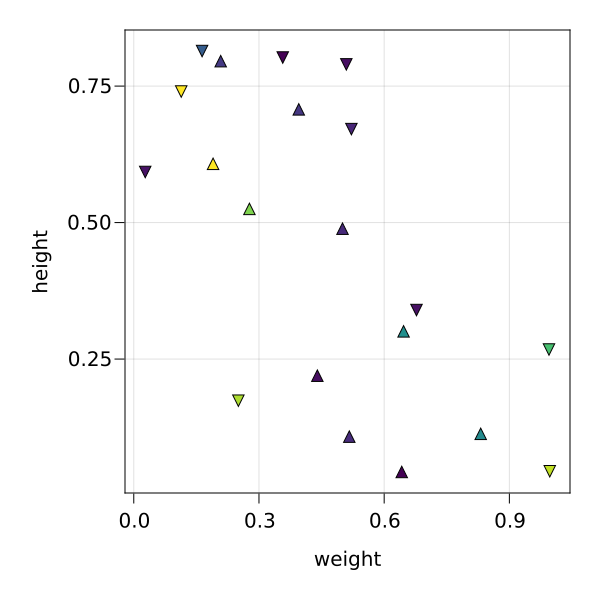
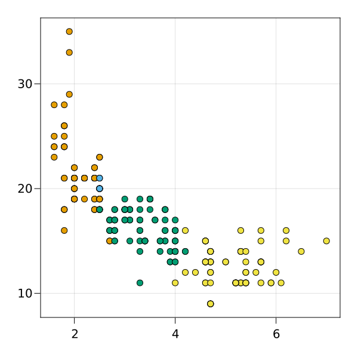
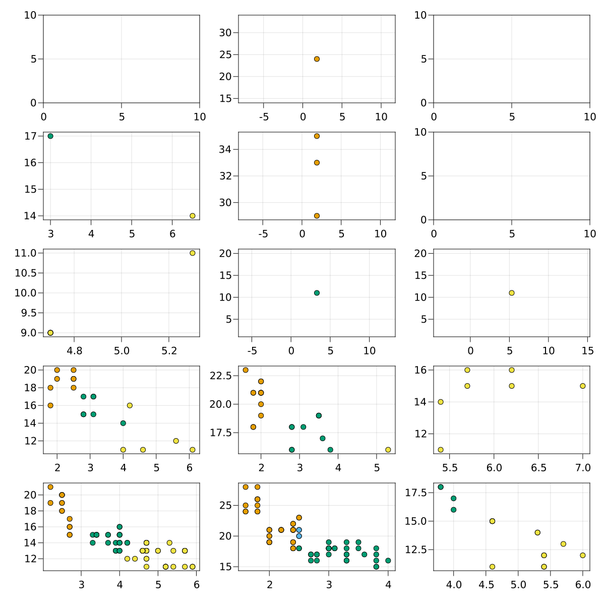
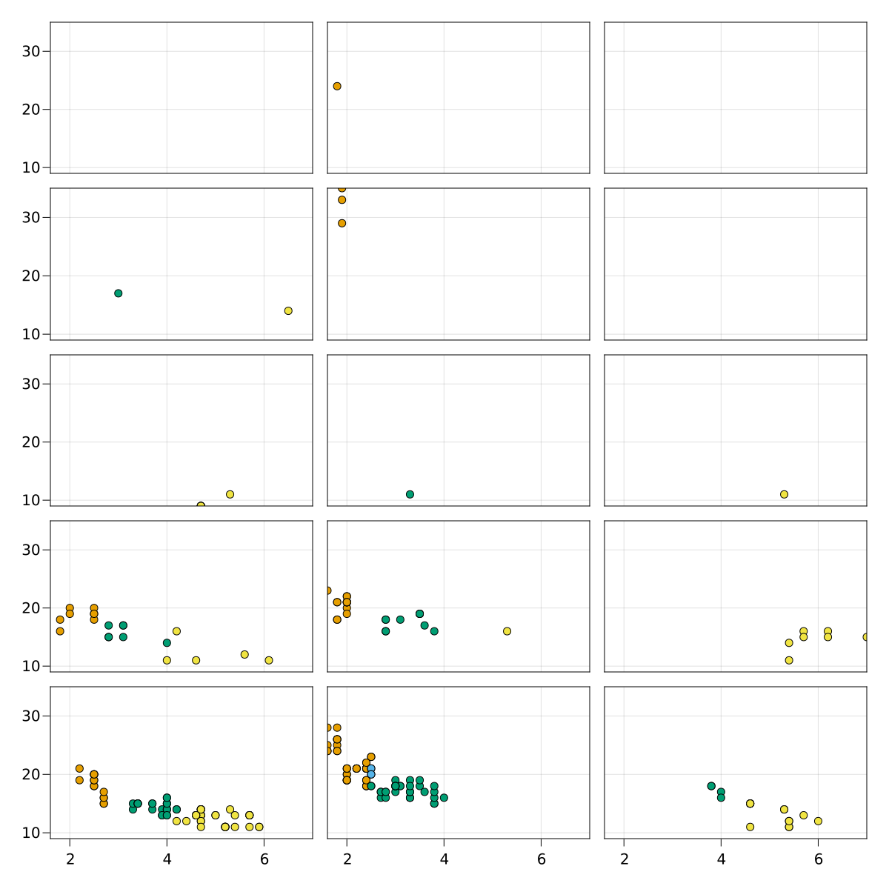

AxisEntries
The key ingredient for data representations are AxisEntries.
The AxisEntries type
An AxisEntries object is made of four components:
- axis,
- entries.
using SplitApplyPlot, CairoMakie
resolution = (600, 600)
fig = Figure(; resolution)
N = 11
rg = range(1, 2, length=N)
ae = AxisEntries(
Axis(fig[1, 1]),
[
Entry(
Scatter,
arguments(rg, cosh.(rg), color=1:N, marker=fill("b", N));
markersize = 15
),
Entry(
Scatter,
arguments(rg, sinh.(rg), color=1:N, marker=fill("c", N));
markersize = 15
),
],
arguments("weight", "height", color="age", marker="name"), #labels
arguments(
identity,
log10,
color=identity,
marker=LittleDict("a" => :circle, "b" => :utriangle, "c" => :dtriangle), #scales
),
)
plot!(ae)
display(fig)
Generating AxisEntries objects
Generating AxisEntries objects by hand is extremely laborious. SplitApplyPlot provides a simple way to generate them from data.
using RDatasets
mpg = RDatasets.dataset("ggplot2", "mpg")
resolution = (600, 600)
fig = Figure(; resolution)
ag = splitapplyplot!(
mappings -> Entry(Scatter, mappings),
fig,
mpg,
:Displ => automatic => "Displacement",
:Cty => automatic => "City miles",
color=:Cyl => categoricalscale => "Cylinders",
)1×1 Matrix{AxisEntries}:
AxisEntries(Axis (4 plots), Entry[Entry(AbstractPlotting.Scatter{ArgType} where ArgType, SplitApplyPlot.Arguments(Any[[1.8, 1.8, 2.0, 2.0, 1.8, 1.8, 2.0, 2.0, 2.4, 2.4 … 2.0, 2.0, 1.9, 1.9, 2.0, 2.0, 1.8, 1.8, 2.0, 2.0], Int32[18, 21, 20, 21, 18, 16, 20, 19, 19, 22 … 22, 21, 35, 29, 21, 19, 21, 18, 19, 21]], Dict{Symbol, Any}(:color => Int32[4, 4, 4, 4, 4, 4, 4, 4, 4, 4 … 4, 4, 4, 4, 4, 4, 4, 4, 4, 4])), Dict{Symbol, Any}()), Entry(AbstractPlotting.Scatter{ArgType} where ArgType, SplitApplyPlot.Arguments(Any[[2.8, 2.8, 3.1, 2.8, 2.8, 3.1, 3.1, 2.8, 3.1, 3.1 … 3.4, 3.4, 4.0, 4.0, 2.8, 2.8, 2.8, 2.8, 2.8, 3.6], Int32[16, 18, 18, 15, 17, 17, 15, 15, 17, 18 … 15, 15, 15, 16, 17, 16, 17, 16, 18, 17]], Dict{Symbol, Any}(:color => Int32[6, 6, 6, 6, 6, 6, 6, 6, 6, 6 … 6, 6, 6, 6, 6, 6, 6, 6, 6, 6])), Dict{Symbol, Any}()), Entry(AbstractPlotting.Scatter{ArgType} where ArgType, SplitApplyPlot.Arguments(Any[[4.2, 5.3, 5.3, 5.3, 5.7, 6.0, 5.7, 5.7, 6.2, 6.2 … 5.4, 5.4, 5.4, 4.6, 5.0, 5.6, 5.3, 4.7, 4.7, 5.7], Int32[16, 14, 11, 14, 13, 12, 16, 15, 16, 15 … 11, 11, 12, 13, 13, 12, 16, 14, 11, 13]], Dict{Symbol, Any}(:color => Int32[8, 8, 8, 8, 8, 8, 8, 8, 8, 8 … 8, 8, 8, 8, 8, 8, 8, 8, 8, 8])), Dict{Symbol, Any}()), Entry(AbstractPlotting.Scatter{ArgType} where ArgType, SplitApplyPlot.Arguments(Any[[2.5, 2.5, 2.5, 2.5], Int32[21, 21, 20, 20]], Dict{Symbol, Any}(:color => Int32[5, 5, 5, 5])), Dict{Symbol, Any}())], SplitApplyPlot.Arguments(Any["Displacement", "City miles"], Dict{Symbol, Any}(:color => "Cylinders")), SplitApplyPlot.Arguments(Any[identity, identity], Dict{Symbol, Any}(:color => LittleDict{Int32, ColorTypes.RGB{Float64}, Vector{Int32}, Vector{ColorTypes.RGB{Float64}}}(4 => RGB{Float64}(0.9019607843137255,0.6235294117647059,0.0), 5 => RGB{Float64}(0.33725490196078434,0.7058823529411765,0.9137254901960784), 6 => RGB{Float64}(0.0,0.6196078431372549,0.45098039215686275), 8 => RGB{Float64}(0.9411764705882353,0.8941176470588236,0.25882352941176473)))))This operation returns a grid of AxisEntries and plots them to the original figure:
display(fig)
layout_x and layout_y can be used to return a less trivial grid of axis plots.
resolution = (1200, 1200)
fig = Figure(; resolution)
ag = splitapplyplot!(
mappings -> Entry(Scatter, mappings),
fig,
mpg,
:Displ => automatic => "Displacement",
:Cty => automatic => "City miles",
color=:Cyl => categoricalscale => "Cylinders",
layout_x=:Drv => categoricalscale => "Drive train",
layout_y=:Fl => categoricalscale => "Fuel type",
)5×3 Matrix{AxisEntries}:
AxisEntries(Axis (0 plots), Entry[], Arguments(Any["Displacement", "City miles"], Dict{Symbol, Any}(:color=>"Cylinders", :layout_x=>"Drive train", :layout_y=>"Fuel type")), Arguments(Any[identity, identity], Dict{Symbol, Any}(:color=>LittleDict{Int32, ColorTypes.RGB{Float64}, Vector{Int32}, Vector{ColorTypes.RGB{Float64}}}(4=>RGB{Float64}(0.901961,0.623529,0.0), 5=>RGB{Float64}(0.337255,0.705882,0.913725), 6=>RGB{Float64}(0.0,0.619608,0.45098), 8=>RGB{Float64}(0.941176,0.894118,0.258824)), :layout_x=>LittleDict{CategoricalArrays.CategoricalValue{String, UInt8}, Int64, Vector{CategoricalArrays.CategoricalValue{String, UInt8}}, Vector{Int64}}("4"=>1, "f"=>2, "r"=>3), :layout_y=>LittleDict{CategoricalArrays.CategoricalValue{String, UInt8}, Int64, Vector{CategoricalArrays.CategoricalValue{String, UInt8}}, Vector{Int64}}("c"=>1, "d"=>2, "e"=>3, "p"=>4, "r"=>5)))) … AxisEntries(Axis (0 plots), Entry[], Arguments(Any["Displacement", "City miles"], Dict{Symbol, Any}(:color=>"Cylinders", :layout_x=>"Drive train", :layout_y=>"Fuel type")), Arguments(Any[identity, identity], Dict{Symbol, Any}(:color=>LittleDict{Int32, ColorTypes.RGB{Float64}, Vector{Int32}, Vector{ColorTypes.RGB{Float64}}}(4=>RGB{Float64}(0.901961,0.623529,0.0), 5=>RGB{Float64}(0.337255,0.705882,0.913725), 6=>RGB{Float64}(0.0,0.619608,0.45098), 8=>RGB{Float64}(0.941176,0.894118,0.258824)), :layout_x=>LittleDict{CategoricalArrays.CategoricalValue{String, UInt8}, Int64, Vector{CategoricalArrays.CategoricalValue{String, UInt8}}, Vector{Int64}}("4"=>1, "f"=>2, "r"=>3), :layout_y=>LittleDict{CategoricalArrays.CategoricalValue{String, UInt8}, Int64, Vector{CategoricalArrays.CategoricalValue{String, UInt8}}, Vector{Int64}}("c"=>1, "d"=>2, "e"=>3, "p"=>4, "r"=>5))))
AxisEntries(Axis (2 plots), Entry[Entry(Scatter{ArgType} where ArgType, Arguments(Any[[3.0], Int32[17]], Dict{Symbol, Any}(:color=>Int32[6])), Dict{Symbol, Any}()), Entry(Scatter{ArgType} where ArgType, Arguments(Any[[6.5], Int32[14]], Dict{Symbol, Any}(:color=>Int32[8])), Dict{Symbol, Any}())], Arguments(Any["Displacement", "City miles"], Dict{Symbol, Any}(:color=>"Cylinders", :layout_x=>"Drive train", :layout_y=>"Fuel type")), Arguments(Any[identity, identity], Dict{Symbol, Any}(:color=>LittleDict{Int32, ColorTypes.RGB{Float64}, Vector{Int32}, Vector{ColorTypes.RGB{Float64}}}(4=>RGB{Float64}(0.901961,0.623529,0.0), 5=>RGB{Float64}(0.337255,0.705882,0.913725), 6=>RGB{Float64}(0.0,0.619608,0.45098), 8=>RGB{Float64}(0.941176,0.894118,0.258824)), :layout_x=>LittleDict{CategoricalArrays.CategoricalValue{String, UInt8}, Int64, Vector{CategoricalArrays.CategoricalValue{String, UInt8}}, Vector{Int64}}("4"=>1, "f"=>2, "r"=>3), :layout_y=>LittleDict{CategoricalArrays.CategoricalValue{String, UInt8}, Int64, Vector{CategoricalArrays.CategoricalValue{String, UInt8}}, Vector{Int64}}("c"=>1, "d"=>2, "e"=>3, "p"=>4, "r"=>5)))) AxisEntries(Axis (0 plots), Entry[], Arguments(Any["Displacement", "City miles"], Dict{Symbol, Any}(:color=>"Cylinders", :layout_x=>"Drive train", :layout_y=>"Fuel type")), Arguments(Any[identity, identity], Dict{Symbol, Any}(:color=>LittleDict{Int32, ColorTypes.RGB{Float64}, Vector{Int32}, Vector{ColorTypes.RGB{Float64}}}(4=>RGB{Float64}(0.901961,0.623529,0.0), 5=>RGB{Float64}(0.337255,0.705882,0.913725), 6=>RGB{Float64}(0.0,0.619608,0.45098), 8=>RGB{Float64}(0.941176,0.894118,0.258824)), :layout_x=>LittleDict{CategoricalArrays.CategoricalValue{String, UInt8}, Int64, Vector{CategoricalArrays.CategoricalValue{String, UInt8}}, Vector{Int64}}("4"=>1, "f"=>2, "r"=>3), :layout_y=>LittleDict{CategoricalArrays.CategoricalValue{String, UInt8}, Int64, Vector{CategoricalArrays.CategoricalValue{String, UInt8}}, Vector{Int64}}("c"=>1, "d"=>2, "e"=>3, "p"=>4, "r"=>5))))
AxisEntries(Axis (1 plots), Entry[Entry(Scatter{ArgType} where ArgType, Arguments(Any[[5.3, 4.7, 4.7, 4.7, 4.7, 4.7], Int32[11, 9, 9, 9, 9, 9]], Dict{Symbol, Any}(:color=>Int32[8, 8, 8, 8, 8, 8])), Dict{Symbol, Any}())], Arguments(Any["Displacement", "City miles"], Dict{Symbol, Any}(:color=>"Cylinders", :layout_x=>"Drive train", :layout_y=>"Fuel type")), Arguments(Any[identity, identity], Dict{Symbol, Any}(:color=>LittleDict{Int32, ColorTypes.RGB{Float64}, Vector{Int32}, Vector{ColorTypes.RGB{Float64}}}(4=>RGB{Float64}(0.901961,0.623529,0.0), 5=>RGB{Float64}(0.337255,0.705882,0.913725), 6=>RGB{Float64}(0.0,0.619608,0.45098), 8=>RGB{Float64}(0.941176,0.894118,0.258824)), :layout_x=>LittleDict{CategoricalArrays.CategoricalValue{String, UInt8}, Int64, Vector{CategoricalArrays.CategoricalValue{String, UInt8}}, Vector{Int64}}("4"=>1, "f"=>2, "r"=>3), :layout_y=>LittleDict{CategoricalArrays.CategoricalValue{String, UInt8}, Int64, Vector{CategoricalArrays.CategoricalValue{String, UInt8}}, Vector{Int64}}("c"=>1, "d"=>2, "e"=>3, "p"=>4, "r"=>5)))) AxisEntries(Axis (1 plots), Entry[Entry(Scatter{ArgType} where ArgType, Arguments(Any[[5.3], Int32[11]], Dict{Symbol, Any}(:color=>Int32[8])), Dict{Symbol, Any}())], Arguments(Any["Displacement", "City miles"], Dict{Symbol, Any}(:color=>"Cylinders", :layout_x=>"Drive train", :layout_y=>"Fuel type")), Arguments(Any[identity, identity], Dict{Symbol, Any}(:color=>LittleDict{Int32, ColorTypes.RGB{Float64}, Vector{Int32}, Vector{ColorTypes.RGB{Float64}}}(4=>RGB{Float64}(0.901961,0.623529,0.0), 5=>RGB{Float64}(0.337255,0.705882,0.913725), 6=>RGB{Float64}(0.0,0.619608,0.45098), 8=>RGB{Float64}(0.941176,0.894118,0.258824)), :layout_x=>LittleDict{CategoricalArrays.CategoricalValue{String, UInt8}, Int64, Vector{CategoricalArrays.CategoricalValue{String, UInt8}}, Vector{Int64}}("4"=>1, "f"=>2, "r"=>3), :layout_y=>LittleDict{CategoricalArrays.CategoricalValue{String, UInt8}, Int64, Vector{CategoricalArrays.CategoricalValue{String, UInt8}}, Vector{Int64}}("c"=>1, "d"=>2, "e"=>3, "p"=>4, "r"=>5))))
AxisEntries(Axis (3 plots), Entry[Entry(Scatter{ArgType} where ArgType, Arguments(Any[[1.8, 1.8, 2.0, 2.0, 2.5, 2.5, 2.5, 2.5], Int32[18, 16, 20, 19, 19, 18, 20, 19]], Dict{Symbol, Any}(:color=>Int32[4, 4, 4, 4, 4, 4, 4, 4])), Dict{Symbol, Any}()), Entry(Scatter{ArgType} where ArgType, Arguments(Any[[2.8, 2.8, 3.1, 3.1, 2.8, 3.1, 4.0], Int32[15, 17, 17, 15, 15, 17, 14]], Dict{Symbol, Any}(:color=>Int32[6, 6, 6, 6, 6, 6, 6])), Dict{Symbol, Any}()), Entry(Scatter{ArgType} where ArgType, Arguments(Any[[4.2, 6.1, 4.0, 4.6, 5.6], Int32[16, 11, 11, 11, 12]], Dict{Symbol, Any}(:color=>Int32[8, 8, 8, 8, 8])), Dict{Symbol, Any}())], Arguments(Any["Displacement", "City miles"], Dict{Symbol, Any}(:color=>"Cylinders", :layout_x=>"Drive train", :layout_y=>"Fuel type")), Arguments(Any[identity, identity], Dict{Symbol, Any}(:color=>LittleDict{Int32, ColorTypes.RGB{Float64}, Vector{Int32}, Vector{ColorTypes.RGB{Float64}}}(4=>RGB{Float64}(0.901961,0.623529,0.0), 5=>RGB{Float64}(0.337255,0.705882,0.913725), 6=>RGB{Float64}(0.0,0.619608,0.45098), 8=>RGB{Float64}(0.941176,0.894118,0.258824)), :layout_x=>LittleDict{CategoricalArrays.CategoricalValue{String, UInt8}, Int64, Vector{CategoricalArrays.CategoricalValue{String, UInt8}}, Vector{Int64}}("4"=>1, "f"=>2, "r"=>3), :layout_y=>LittleDict{CategoricalArrays.CategoricalValue{String, UInt8}, Int64, Vector{CategoricalArrays.CategoricalValue{String, UInt8}}, Vector{Int64}}("c"=>1, "d"=>2, "e"=>3, "p"=>4, "r"=>5)))) AxisEntries(Axis (1 plots), Entry[Entry(Scatter{ArgType} where ArgType, Arguments(Any[[5.7, 5.7, 6.2, 6.2, 7.0, 5.4, 5.4], Int32[16, 15, 16, 15, 15, 14, 11]], Dict{Symbol, Any}(:color=>Int32[8, 8, 8, 8, 8, 8, 8])), Dict{Symbol, Any}())], Arguments(Any["Displacement", "City miles"], Dict{Symbol, Any}(:color=>"Cylinders", :layout_x=>"Drive train", :layout_y=>"Fuel type")), Arguments(Any[identity, identity], Dict{Symbol, Any}(:color=>LittleDict{Int32, ColorTypes.RGB{Float64}, Vector{Int32}, Vector{ColorTypes.RGB{Float64}}}(4=>RGB{Float64}(0.901961,0.623529,0.0), 5=>RGB{Float64}(0.337255,0.705882,0.913725), 6=>RGB{Float64}(0.0,0.619608,0.45098), 8=>RGB{Float64}(0.941176,0.894118,0.258824)), :layout_x=>LittleDict{CategoricalArrays.CategoricalValue{String, UInt8}, Int64, Vector{CategoricalArrays.CategoricalValue{String, UInt8}}, Vector{Int64}}("4"=>1, "f"=>2, "r"=>3), :layout_y=>LittleDict{CategoricalArrays.CategoricalValue{String, UInt8}, Int64, Vector{CategoricalArrays.CategoricalValue{String, UInt8}}, Vector{Int64}}("c"=>1, "d"=>2, "e"=>3, "p"=>4, "r"=>5))))
AxisEntries(Axis (3 plots), Entry[Entry(Scatter{ArgType} where ArgType, Arguments(Any[[2.5, 2.5, 2.5, 2.5, 2.2, 2.2, 2.5, 2.5, 2.5, 2.5, 2.7, 2.7, 2.7, 2.7, 2.7], Int32[18, 18, 20, 20, 21, 19, 19, 19, 20, 20, 15, 16, 15, 16, 17]], Dict{Symbol, Any}(:color=>Int32[4, 4, 4, 4, 4, 4, 4, 4, 4, 4, 4, 4, 4, 4, 4])), Dict{Symbol, Any}()), Entry(Scatter{ArgType} where ArgType, Arguments(Any[[3.7, 3.7, 3.9, 3.9, 3.9, 4.0, 4.0, 4.0, 4.0, 4.2 … 4.0, 3.3, 3.3, 3.4, 3.4, 4.0, 3.4, 3.4, 4.0, 4.0], Int32[15, 14, 13, 14, 13, 14, 15, 14, 13, 14 … 13, 14, 15, 15, 15, 16, 15, 15, 15, 16]], Dict{Symbol, Any}(:color=>Int32[6, 6, 6, 6, 6, 6, 6, 6, 6, 6 … 6, 6, 6, 6, 6, 6, 6, 6, 6, 6])), Dict{Symbol, Any}()), Entry(Scatter{ArgType} where ArgType, Arguments(Any[[5.3, 5.7, 4.7, 4.7, 5.2, 5.2, 4.7, 4.7, 5.2, 5.7 … 4.7, 4.7, 5.7, 4.2, 4.4, 4.6, 5.0, 4.7, 4.7, 5.7], Int32[14, 11, 14, 14, 11, 11, 13, 13, 11, 13 … 14, 14, 13, 12, 12, 13, 13, 14, 11, 13]], Dict{Symbol, Any}(:color=>Int32[8, 8, 8, 8, 8, 8, 8, 8, 8, 8 … 8, 8, 8, 8, 8, 8, 8, 8, 8, 8])), Dict{Symbol, Any}())], Arguments(Any["Displacement", "City miles"], Dict{Symbol, Any}(:color=>"Cylinders", :layout_x=>"Drive train", :layout_y=>"Fuel type")), Arguments(Any[identity, identity], Dict{Symbol, Any}(:color=>LittleDict{Int32, ColorTypes.RGB{Float64}, Vector{Int32}, Vector{ColorTypes.RGB{Float64}}}(4=>RGB{Float64}(0.901961,0.623529,0.0), 5=>RGB{Float64}(0.337255,0.705882,0.913725), 6=>RGB{Float64}(0.0,0.619608,0.45098), 8=>RGB{Float64}(0.941176,0.894118,0.258824)), :layout_x=>LittleDict{CategoricalArrays.CategoricalValue{String, UInt8}, Int64, Vector{CategoricalArrays.CategoricalValue{String, UInt8}}, Vector{Int64}}("4"=>1, "f"=>2, "r"=>3), :layout_y=>LittleDict{CategoricalArrays.CategoricalValue{String, UInt8}, Int64, Vector{CategoricalArrays.CategoricalValue{String, UInt8}}, Vector{Int64}}("c"=>1, "d"=>2, "e"=>3, "p"=>4, "r"=>5)))) AxisEntries(Axis (2 plots), Entry[Entry(Scatter{ArgType} where ArgType, Arguments(Any[[3.8, 3.8, 4.0, 4.0], Int32[18, 18, 17, 16]], Dict{Symbol, Any}(:color=>Int32[6, 6, 6, 6])), Dict{Symbol, Any}()), Entry(Scatter{ArgType} where ArgType, Arguments(Any[[5.3, 5.3, 5.7, 6.0, 4.6, 5.4, 5.4, 4.6, 4.6, 4.6, 4.6, 5.4, 5.4], Int32[14, 14, 13, 12, 11, 11, 12, 15, 15, 15, 15, 11, 12]], Dict{Symbol, Any}(:color=>Int32[8, 8, 8, 8, 8, 8, 8, 8, 8, 8, 8, 8, 8])), Dict{Symbol, Any}())], Arguments(Any["Displacement", "City miles"], Dict{Symbol, Any}(:color=>"Cylinders", :layout_x=>"Drive train", :layout_y=>"Fuel type")), Arguments(Any[identity, identity], Dict{Symbol, Any}(:color=>LittleDict{Int32, ColorTypes.RGB{Float64}, Vector{Int32}, Vector{ColorTypes.RGB{Float64}}}(4=>RGB{Float64}(0.901961,0.623529,0.0), 5=>RGB{Float64}(0.337255,0.705882,0.913725), 6=>RGB{Float64}(0.0,0.619608,0.45098), 8=>RGB{Float64}(0.941176,0.894118,0.258824)), :layout_x=>LittleDict{CategoricalArrays.CategoricalValue{String, UInt8}, Int64, Vector{CategoricalArrays.CategoricalValue{String, UInt8}}, Vector{Int64}}("4"=>1, "f"=>2, "r"=>3), :layout_y=>LittleDict{CategoricalArrays.CategoricalValue{String, UInt8}, Int64, Vector{CategoricalArrays.CategoricalValue{String, UInt8}}, Vector{Int64}}("c"=>1, "d"=>2, "e"=>3, "p"=>4, "r"=>5))))The figure looks as follows:
display(fig)
The figure can then be further cleaned up by working with the matrix of axes:
hideinnerdecorations!(ag)
linkaxes!(ag...)
display(fig)
This page was generated using Literate.jl.